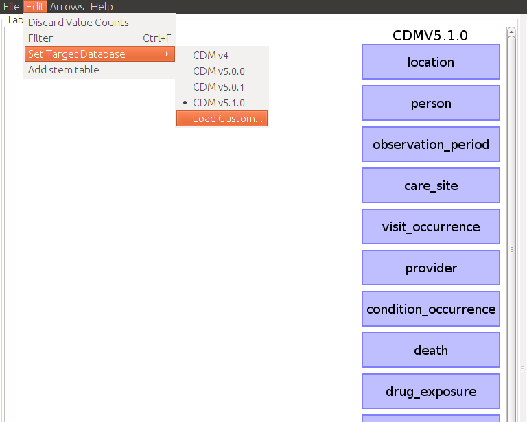
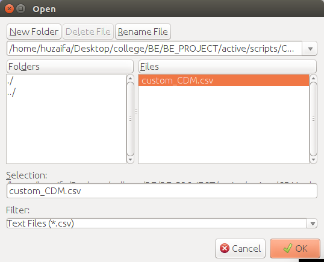
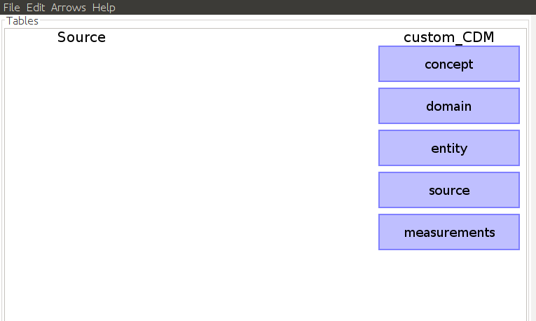
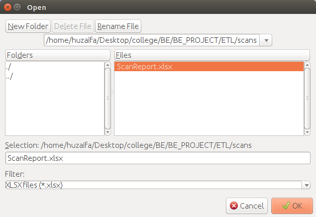
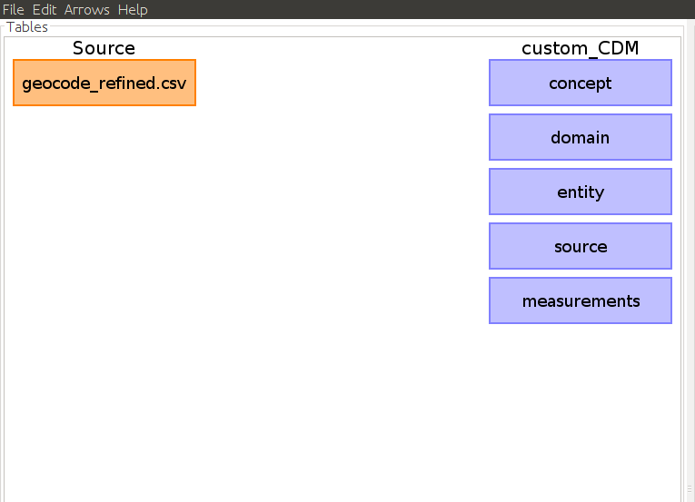
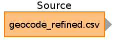
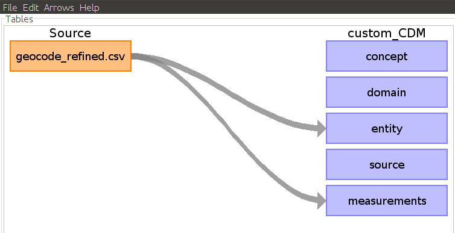
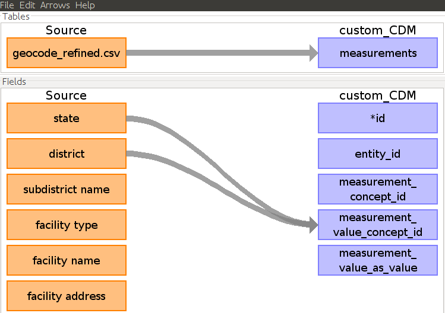
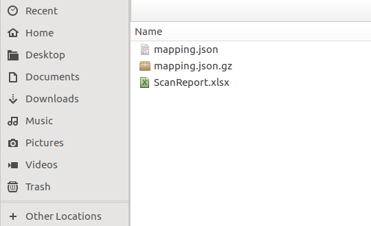

Rabbit-In-A-Hat USER GUIDE
-
1.To open the Rabbit-In-A-Hat tool, go to the ETL directory

-
2. Open the jar file named RabbitInAHat.jar
Linux/mac:
command:- java -jar RabbitInAHat.jarWindows:
command:- javaw.exe -jar RabbitInAHat.jar -
3.Using the tool
Load Custom CDM
Since we want to use our custom CDM, we have to upload the custom_CDM.csv file which contains our CDM schema in a format accepted by the tool.
Now our custom CDM is loaded as the destination Database in the tool

Upload Scan File
Go to file->Open Scan Report and select the scan report generated by the WhiteRabbit tool
Now the source file will be visible in the tool
Creating Mappings
Connecting Source Tables to CDM Tables
To connect a source table to a CDM table, simply hover over the source table until an arrow head appears.
Use your mouse to grab the arrow head and drag it to the corresponding CDM table where data will be going.

Connecting Source Fields to CDM Fields
By double clicking on an arrow connecting a source and CDM table, it will open a Fields pane below the arrow selected. The Fields pane will have all the source table and CDM fields and is meant to make the specific column mappings between tables. Hovering over a source table will generate an arrow head that can then be selected and dragged to its corresponding CDM field.

Save and upload
go to file->save as and save file with some name and any of the two given extensions
go to the folder where you saved your file, and extract the zipped file. You will obtain a file with .json extension
upload json file to the webapp